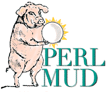

Complete Perl source code is included. Administrators can easily extend the PerlMUD system by writing additional Perl code.
Version 3.0 has two major new features:
mudlib.pl.
Essentially all of the MUD's behavior can be changed "on the fly"
with this feature. Administrators in production environments can use
this feature to activate new changes without restarting, after testing
them in a separate test MUD environment. See help @reload
and the mudlib.pl and mud source files for more information.
Version 2.1 also lets the MUD admin decide whether users should be permitted to use the @emit command, which says things without prefixing them with the user's name. Set the $allowEmit flag to 1 or 0 to control this feature.
Version 2.1 adds the @gag and @ungag
commands. @gag person prevents you from
hearing anything that person says. (Beware:
you won't see them coming or going either.)
@ungag person lets you hear that person
again. Type examine me to find
out who is on your personal gag list
if you have forgotten.
Finally, Version 2.1 writes a new database format which should not need to be changed again. The source code of version 2.1 has been rewritten to use an array of objects (hashes), instead of separate arrays for each characteristic of an object, and the new database format stores attribute-value pairs. This will make it much easier to customize your mud server code in a way that is compatible with new releases of PerlMUD.
A Java-based client, which is comparable to specialized mud clients in its friendliness, is also included.
Most Unix systems offer Perl. PerlMUD may or may not work for you
under Windows. PerlMUD will run just fine under MacOS X.
If you do use the software
with Windows, you will need to provide a compatible alternative
to the Unix sendmail program, or give out
accounts manually. Your input on NT experiences is welcome.
MacPerl can apparently run PerlMUD with some success on MacOS Classic; again, more input on this is welcome.
PerlMUD runs without problems under Linux and other common Unix operating systems with Perl 5 installed.
http://www.boutell.com/perlmud/perlmud-3.0.tar.gz
Save the file to disk. You will need to issue these commands after the download:
uncompress perlmud-3.0.tar.gz tar -xf perlmud-3.0.tar cd perlmud-3.0The above commands are intended for Unix, and will also work at the terminal prompt in MacOS X.
$dataDirectory setting at the top of that
file to match the directoy where PerlMUD 3.0 hs been placed.
Perform the following steps:
$dataDirectory in
the file mud to point to the path
where you have installed PerlMUD 3.0.
$serverName in mudlib.pl to the name
you would prefer to see in the titles of various web pages produced
by the simple web interface.
$hostName in mudlib.pl to the Internet host
name of the server. Example: if your PerlMUD server runs on
the machine www.mycompany.com, then put
www.mycompany.com here. You cannot
simply make up a name -- if you don't know
what the machine is called, ask the administrator.
This information is used to give new users instructions
to connect to the MUD when they receive accounts via email.
$tinypPort (if you do not want to
use port 4096) and code>$httpPort (if you do not want to use
port 4196) in mudlib.pl. The first is used for telnet and java client
access; the second is used by the simple web interface.
Now, to start the MUD, type (under Unix):
perl mud &In the beginning, there are only two objects: The Void (a room, object #0) and Admin (a player, object #1).
Wait a few seconds for the mud to start, then type the following commands (under Unix):
telnet localhost 4096 connect admin initialOnce you have logged into the admin character, type "help" for more information. You will find the tutorial topics useful to get you started with PerlMUD administration.
change your password using the @password command before you let the public know your server exists! Try "help @password" while logged into the mud for further instructions. (Most administrative commands begin with an @ sign.)
http://yourhost.com:4196/, where
yourhost.com should be replaced
with the hostname of the machine you are running
your PerlMUD server on.
allowed.txt in your
PerlMUD directory. This will tell PerlMUD not
to let anyone apply for an account
online. Instead, you will use the
@pcreate command when logged in as the
admin user, to create accounts manually:
@pcreate name = passwordYou'll also want to edit the document
home.html to no longer link
to the special "public applications" URL
of the server ( /apply ).
allowed.txt in your PerlMUD
directory, and put the names of domains
and/or individual email addresses that
are allowed to apply for accounts.
Here's a simple example:
boutell.comIf your allowed.txt file contains the line above, then all users with addresses ending in boutell.com are permitted to apply for accounts.
Here's another example:
boutell.com smith@jones.comThis allowed.txt file would permit anyone at boutell.com, or the specific email address smith@jones.com, to apply for an account.
accounts.log,
giving the account name and the email address
for that user. You can use this information
to decide who must be locked out of the system.
Just create a file called
lockouts.txt in your PerlMUD
directory, and put the names of domains
and/or individual email addresses that
are NOT allowed to apply for accounts.
Here's a simple example:
ugly.comIf your allowed.txt file contains the line above, then all users with addresses ending in ugly.com are NOT permitted to apply for accounts.
Here's another example:
ugly.com jerk@jones.comThis allowed.txt file would not permit anyone at ugly.com, or the specific email address jerk@jones.com, to apply for an account under any circumstances.
accounts.log,
giving the account name and the email address
for that user. You can use this information
to decide who must be locked out of the system.
The simplest, although the least attractive, is
to connect through any web browser
by accessing the URL http://yourhost.com:4196/.
This simple interface is easy to access, but users
who are familiar with telnet programs
will prefer to telnet to port 4096
on the server machine, or use a mud client program
such as TinyFugue for
Unix or one of the numerous Mac and Windows mud clients.
The third approach, which is as easy to understand as the web interface, as fast as the telnet interface, and more attractive than either, is to use the Java PerlMUD client. The Java client is far more user-friendly than a telnet session, and it appears as an integral part of the web browser.
http://yourhost.com:4196/
Of course, yourhost.com must be replaced
by the name of the host on which your PerlMUD server
is running.
Some users with firewalls may also have telnet access if they are permitted to log into a special "gateway" machine first.